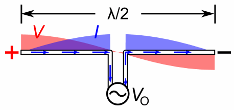
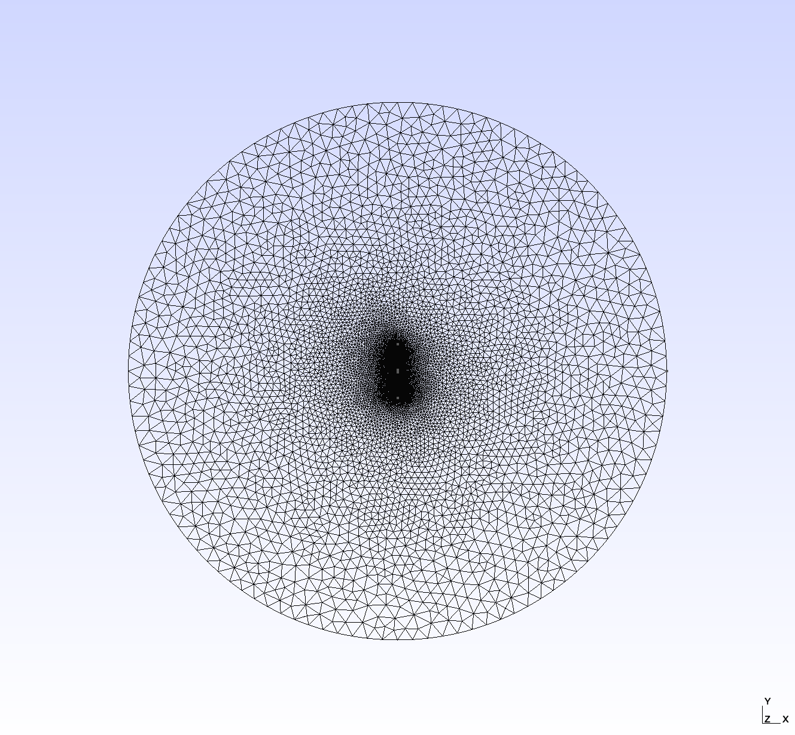
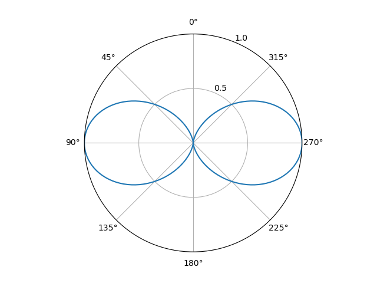
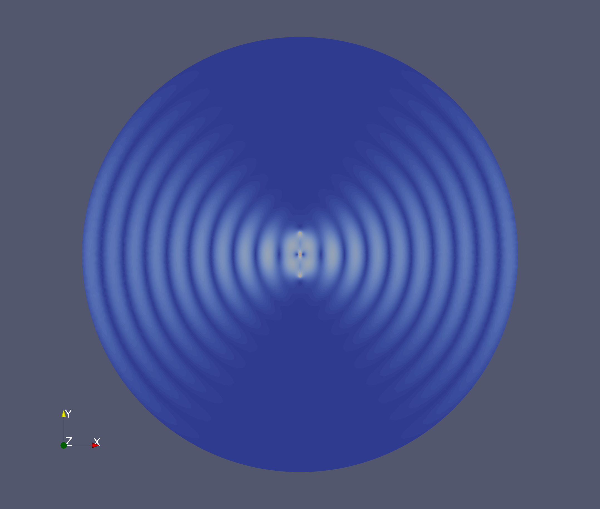

Dipole Antenna Benchmark
This document summarizes and describes the half-wave dipole antenna benchmark. In this scenario, a vertically-oriented antenna structure is excited by a 1 GHz signal in an infinite vacuum. Then, the subsequent transmitted radiation is absorbed by a first-order absorbing boundary condition (specifically, the VectorEMRobinBC object), positioned five wavelengths away from the antenna center-point.
Model Geometry and Antenna Specifications
A half-wave dipole antenna has a geometry shown in Figure 1.

Figure 1: Half-wave dipole antenna with oscillating voltage and current standing wave.
The oscillating voltage between the two antenna conductors produces a current standing wave distribution along the length of the dipole structure. The antenna resonates (and transmits) when the applied voltage wave has a wavelength equal to two times the dipole length. Thus, the resonant frequency of a half-wave dipole is given by
where is the resonant frequency, is the speed of light, and is the length of the half-wave dipole antenna. In this benchmark, a 1 GHz resonant antenna will be modeled, and the parameters for the geometry are shown in Table 1. Note that the feed gap was chosen so that it would be much smaller then the overall length of the antenna, as an attempt to make the antenna geometry more ideal. The domain radius was chosen to be suitably far from the antenna surface to optimize transmission through the absorbing boundary condition. As mentioned in the VectorEMRobinBC documentation, the first-order condition used was designed for flat surfaces, not curved ones. Setting the boundary far enough from the origin increases the accuracy of this assumption for this scenario.
Table 1: Antenna geometry parameters for the dipole antenna verification benchmark.
| Parameter (unit) | Value |
|---|---|
| Resonant frequency (GHz) | 1 |
| Wavelength, (m) | 0.3 |
| Antenna length, (m) | 0.15 |
| Antenna feed gap () (m) | 0.0075 |
| Domain radius () (m) | 1.5 |
Governing Equations and Boundary Conditions
In this simulation, both the real and imaginary components of the electric field wave will be simulated separately as vector finite element variables (with the magnitude displayed in Figure 4), but the frequency-domain electric field wave equation in general is given by:
where
is the complex electric field vector in V/m,
is the vacuum magnetic permeability of the medium in H/m,
is the electric permittivity of the medium in F/m, and
is the operating frequency in rad/s.
These terms are represented by the CurlCurlField and VectorFunctionReaction objects, respectively. At the edge of the simulation domain, this model uses the VectorEMRobinBC object. This is given by
where
is the incoming electric field vector (set to zero since the wave is generated elsewhere and being absorbed by this boundary),
is a function containing the condition coefficients (in this case, the wave number of the excited wave ), and
is the boundary normal vector.
A vector penalty boundary condition imposing the condition V/m for both the real and imaginary components was used to excite the emitted wave.
It is important to note that the penalty boundary condition is only used to excite the electromagnetic wave and determine the radiation intensity pattern of the antenna for this benchmark. Ideally, a boundary condition specifying the surface current on the antenna based on a driving voltage would be used here to generate the physically exact magnitude of the electric field. This does not currently exist within the electromagnetic module, but is a planned addition in the future.
Model Parameters
Important constant model parameters are shown below in Table 2. Note the following:
The electric permittivity mentioned above is related to the relative permittivity mentioned below using the relation where is the vacuum electric permittivity.
The operating frequency is related to below using the relation .
Table 2: Constant model parameters for the dipole antenna benchmark study.
| Parameter (unit) | Value(s) |
|---|---|
| Operating frequency, (GHz) | 1 |
| Relative permittivity, (-) | 1 |
| Vacuum electric permittivity, (F/m) | |
| Vacuum magnetic permeability, (H/m) |
Calculated parameters needed for the boundary conditions (the wave number in the direction of propagation of the traveling wave in a 2D waveguide) were calculated using the following equation (more information in (Griffiths, 1999)):
where:
is the speed of light (or m/s).
Using the 1 GHz operating frequency presented in Figure 4, the value for (m) used in the input file shown below is
Mesh
The mesh used in this study was created in Gmsh, using a top-down view of the geometry shown above in Figure 1. The .geo file used to create this mesh is shown at the end of this section. To reproduce the corresponding .msh file in a terminal, ensure that gmsh is installed and available in the system PATH and simply run the following command at the location of dipole_antenna_1G.geo
gmsh -2 dipole_antenna_1G.geo -clscale 0.2 -order 2 -algo del2d
As of Gmsh 4.6.0, this command produces a second order 2D mesh with an element size factor of 0.2 (not including the point-wise scaling factors contained within the mesh file) using a Delaunay algorithm. The unstructured, triangular mesh contains 39905 nodes and 20157 elements. An image of the result is shown in Figure 2. Note that the second order mesh is required because we are using NEDELEC_ONE vector finite elements for all solution variables.

Figure 2: Mesh used in the dipole antenna benchmark study.
Mesh File
// Half-wave Dipole Antenna
// Resonant Frequency = 1 GHz
// wavelength = c / f
// Antenna length (L) = wavelength / 2
// Antenna feed gap = L / 20
// Domain radius = 5 * wavelength
// Use global scaling factor = 0.2 to duplicate the "fine" MSH file used for
// benchmark graphics.
SetFactory("OpenCASCADE");
Circle(1) = {0, 0, 0, 1.5, 0, 2*Pi};
Point(2) = {0, 0.15, 0, 0.01};
Point(3) = {0, -0.15, 0, 0.01};
Point(4) = {0, 0.0075, 0, 0.01};
Point(5) = {0, -0.0075, 0, 0.01};
Line(2) = {2, 4};
Line(3) = {5, 3};
Line Loop(1) = {1};
Plane Surface(1) = {1};
Line{2} In Surface{1}; // Tells Gmsh that the antenna poles are within the meshed surface (and
Line{3} In Surface{1}; // should have nodes on them)
Physical Line("boundary") = {1};
Physical Line("antenna") = {2, 3};
Physical Surface("vacuum") = {1};
Far-field Radiation Intensity Theory
To confirm that the module benchmark is performing as intended, it will be compared to the far-field radiation intensity pattern for a half-wave dipole antenna. The far-field electric field for a half-wave antenna is given in (Silver, 1984) as
where
is the impedance of free space (377 ),
is the peak current amplitude in Amps,
is the radial position in meters,
is the angle of position around the antenna relative to one of the end nodes in radians,
is the driving frequency in Hz, and
is the wavenumber in m.
Total power in the dipole is proportional to , which also means that, directionally, total power is also
A two-dimensional polar plot of this relationship is shown in Figure 3 for a vertically-oriented half-wave dipole antenna. This shows that a half-wave dipole antenna has null, or zero intensity, regions in either direction parallel to its length, with maximum intensity at and . The beamwidth, or the region outside of which has a signal which is below 3 dB, or half power, compared to the peak intensity, is around .

Figure 3: Theoretical radiation intensity pattern of a vertically-oriented half-wave dipole antenna.
Input File
# Verification Benchmark - Half-wave Dipole Antenna (Frequency Domain)
# Resonant Frequency = 1 GHz
# Wave Propagation Medium: Vacuum
[Mesh<<<{"href": "../../../syntax/Mesh/index.html"}>>>]
[file_mesh]
type = FileMeshGenerator<<<{"description": "Read a mesh from a file.", "href": "../../../source/meshgenerators/FileMeshGenerator.html"}>>>
file<<<{"description": "The filename to read."}>>> = dipole_antenna_1G.msh
[]
[refine]
type = RefineBlockGenerator<<<{"description": "Mesh generator which refines one or more blocks in an existing mesh", "href": "../../../source/meshgenerators/RefineBlockGenerator.html"}>>>
input<<<{"description": "Input mesh to refine"}>>> = file_mesh
block<<<{"description": "The list of blocks to be refined"}>>> = 'vacuum'
refinement<<<{"description": "Minimum amount of times to refine each block, corresponding to their index in 'block'. A single value can be specified to refine all blocks."}>>> = 2
[]
[]
[Variables<<<{"href": "../../../syntax/Variables/index.html"}>>>]
[E_real]
order<<<{"description": "Specifies the order of the FE shape function to use for this variable (additional orders not listed are allowed)"}>>> = FIRST
family<<<{"description": "Specifies the family of FE shape functions to use for this variable"}>>> = NEDELEC_ONE
[]
[E_imag]
order<<<{"description": "Specifies the order of the FE shape function to use for this variable (additional orders not listed are allowed)"}>>> = FIRST
family<<<{"description": "Specifies the family of FE shape functions to use for this variable"}>>> = NEDELEC_ONE
[]
[]
[Functions<<<{"href": "../../../syntax/Functions/index.html"}>>>]
[WaveNumberSquared]
type = ParsedFunction<<<{"description": "Function created by parsing a string", "href": "../../../source/functions/MooseParsedFunction.html"}>>>
expression<<<{"description": "The user defined function."}>>> = '(2*pi*1e9/3e8)*(2*pi*1e9/3e8)'
[]
[]
[Kernels<<<{"href": "../../../syntax/Kernels/index.html"}>>>]
[curl_curl_real]
type = CurlCurlField<<<{"description": "Weak form term corresponding to $\\nabla \\times (a \\nabla \\times \\vec{E})$.", "href": "../../../source/kernels/CurlCurlField.html"}>>>
variable<<<{"description": "The name of the variable that this residual object operates on"}>>> = E_real
[]
[coeff_real]
type = VectorFunctionReaction<<<{"description": "Kernel representing the contribution of the PDE term $sign * f * u$, where $f$ is a function coefficient and $u$ is a vector variable.", "href": "../../../source/kernels/VectorFunctionReaction.html"}>>>
variable<<<{"description": "The name of the variable that this residual object operates on"}>>> = E_real
function<<<{"description": "Function coefficient multiplier for field."}>>> = WaveNumberSquared
sign<<<{"description": "Sign of boundary term in weak form."}>>> = negative
[]
[curl_curl_imag]
type = CurlCurlField<<<{"description": "Weak form term corresponding to $\\nabla \\times (a \\nabla \\times \\vec{E})$.", "href": "../../../source/kernels/CurlCurlField.html"}>>>
variable<<<{"description": "The name of the variable that this residual object operates on"}>>> = E_imag
[]
[coeff_imag]
type = VectorFunctionReaction<<<{"description": "Kernel representing the contribution of the PDE term $sign * f * u$, where $f$ is a function coefficient and $u$ is a vector variable.", "href": "../../../source/kernels/VectorFunctionReaction.html"}>>>
variable<<<{"description": "The name of the variable that this residual object operates on"}>>> = E_imag
function<<<{"description": "Function coefficient multiplier for field."}>>> = WaveNumberSquared
sign<<<{"description": "Sign of boundary term in weak form."}>>> = negative
[]
[]
[BCs<<<{"href": "../../../syntax/BCs/index.html"}>>>]
[antenna_real] # Impose exact solution of electric field onto antenna surface.
type = VectorCurlPenaltyDirichletBC<<<{"description": "Enforces a Dirichlet boundary condition for the curl of vector nonlinear variables in a weak sense by applying a penalty to the difference in the current solution and the Dirichlet data.", "href": "../../../source/bcs/VectorCurlPenaltyDirichletBC.html"}>>> # Replace with proper antenna surface current condition.
penalty<<<{"description": "The penalty coefficient"}>>> = 1e5
function_y<<<{"description": "The function for the y component"}>>> = '1'
boundary<<<{"description": "The list of boundary IDs from the mesh where this object applies"}>>> = antenna
variable<<<{"description": "The name of the variable that this residual object operates on"}>>> = E_real
[]
[antenna_imag]
type = VectorCurlPenaltyDirichletBC<<<{"description": "Enforces a Dirichlet boundary condition for the curl of vector nonlinear variables in a weak sense by applying a penalty to the difference in the current solution and the Dirichlet data.", "href": "../../../source/bcs/VectorCurlPenaltyDirichletBC.html"}>>>
penalty<<<{"description": "The penalty coefficient"}>>> = 1e5
function_y<<<{"description": "The function for the y component"}>>> = '1'
boundary<<<{"description": "The list of boundary IDs from the mesh where this object applies"}>>> = antenna
variable<<<{"description": "The name of the variable that this residual object operates on"}>>> = E_imag
[]
[radiation_condition_real]
type = VectorEMRobinBC<<<{"description": "First order Robin-style Absorbing/Port BC for vector variables.", "href": "../../../source/bcs/VectorEMRobinBC.html"}>>>
variable<<<{"description": "The name of the variable that this residual object operates on"}>>> = E_real
coupled_field<<<{"description": "Coupled field variable."}>>> = E_imag
boundary<<<{"description": "The list of boundary IDs from the mesh where this object applies"}>>> = boundary
component<<<{"description": "Variable field component (real or imaginary)."}>>> = real
mode<<<{"description": "Mode of operation for VectorEMRobinBC."}>>> = absorbing
beta<<<{"description": "Scalar wave number."}>>> = 20.9439510239 # wave number at 1 GHz
[]
[radiation_condition_imag]
type = VectorEMRobinBC<<<{"description": "First order Robin-style Absorbing/Port BC for vector variables.", "href": "../../../source/bcs/VectorEMRobinBC.html"}>>>
variable<<<{"description": "The name of the variable that this residual object operates on"}>>> = E_imag
coupled_field<<<{"description": "Coupled field variable."}>>> = E_real
boundary<<<{"description": "The list of boundary IDs from the mesh where this object applies"}>>> = boundary
component<<<{"description": "Variable field component (real or imaginary)."}>>> = imaginary
mode<<<{"description": "Mode of operation for VectorEMRobinBC."}>>> = absorbing
beta<<<{"description": "Scalar wave number."}>>> = 20.9439510239 # wave number at 1 GHz
[]
[]
[Preconditioning<<<{"href": "../../../syntax/Preconditioning/index.html"}>>>]
[SMP]
type = SMP<<<{"description": "Single matrix preconditioner (SMP) builds a preconditioner using user defined off-diagonal parts of the Jacobian.", "href": "../../../source/preconditioners/SingleMatrixPreconditioner.html"}>>>
full<<<{"description": "Set to true if you want the full set of couplings between variables simply for convenience so you don't have to set every off_diag_row and off_diag_column combination."}>>> = true
[]
[]
[Executioner<<<{"href": "../../../syntax/Executioner/index.html"}>>>]
type = Steady
solve_type = NEWTON
petsc_options_iname = '-pc_type'
petsc_options_value = 'lu'
[]
[Outputs<<<{"href": "../../../syntax/Outputs/index.html"}>>>]
exodus<<<{"description": "Output the results using the default settings for Exodus output."}>>> = true
perf_graph<<<{"description": "Enable printing of the performance graph to the screen (Console)"}>>> = true
[]Solution and Discussion
Using the Helmholtz wave equation for vector fields in the frequency domain discussed above, an exciting complex electric field ( V/m) was applied to the surface of the antenna and the radiation field was simulated using the electromagnetics module. These results are shown in Figure 4. Very good qualitative agreement is seen with the theoretical far-field radiation pattern.

Figure 4: Electric field radiation pattern of half-wave dipole antenna driven by a 1GHz signal, simulated using the EM module. Note that field intensity is normalized to 1.0.
References
- David J. Griffiths.
Introduction to Electrodynamics.
Prentice Hall, Upper Saddle River, New Jersey, USA, 3rd edition, 1999.[Export]
- Samuel Silver.
Microwave Antenna Theory and Design.
The Institute of Engineering and Technology, Stevenage, UK, 1984.
doi:10.1049/PBEW019E.[Export]